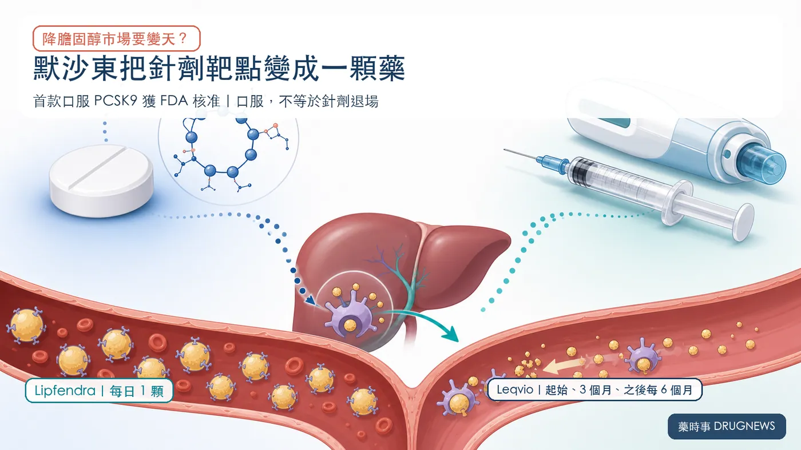
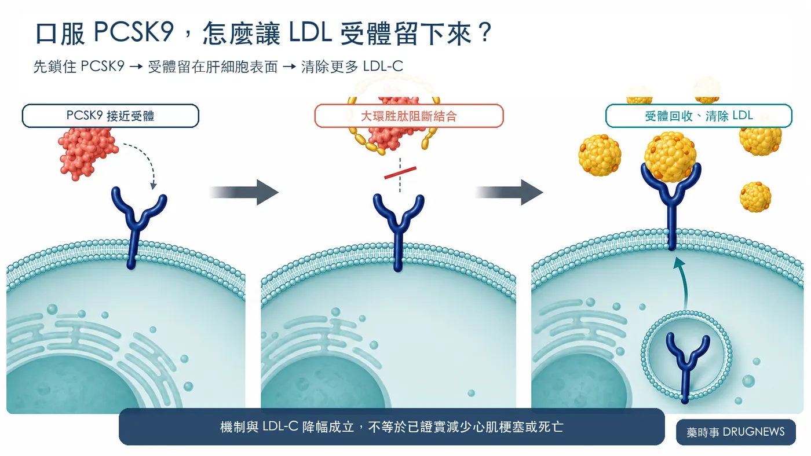
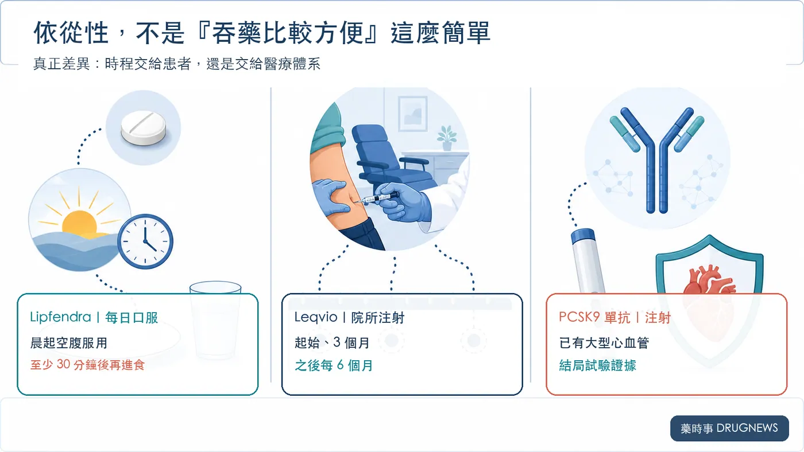
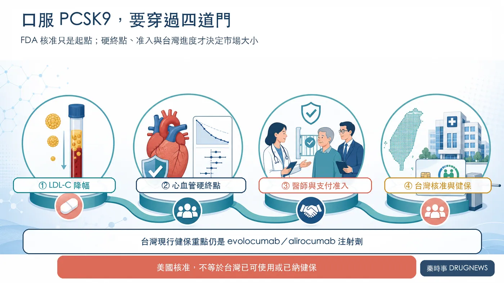

過去十年，想用 PCSK9 這個靶點把壞膽固醇大幅壓低，幾乎都得接受注射。
分享這篇分析
把這篇文章轉給關注生技醫藥、公司研究或資本市場的朋友。
現在，默沙東把這條路做成一顆每天吞的藥。
2026 年 7 月 15 日，美國食品藥物管理局（FDA）正式核准 Lipfendra（學名 enlicitide）。它是第一款獲 FDA 核准的口服 PCSK9 抑制劑，用於成人高膽固醇血症，包括異合子家族性高膽固醇血症（HeFH），需搭配飲食與運動。
兩項關鍵第三期試驗共 3,207 人。第 24 週時，Lipfendra 相較安慰劑校正後，讓低密度脂蛋白膽固醇（LDL-C，俗稱壞膽固醇）下降 56% 與 59%。
這個數字，足以讓市場開始想像：一顆藥，會不會把針劑的市場整碗端走？
先別急著替針劑辦告別式。
Lipfendra 確實跨過一道大門，但降脂藥真正的勝負，還要看心血管硬終點、長期依從性、醫師處方與保險給付。口服只是開門方式改了，門後的仗才剛開始。

01｜第一顆口服 PCSK9，突破在哪裡？
PCSK9（會加速肝臟 LDL 受體被分解的蛋白）像一個「拆除標記」。它和 LDL 受體結合後，受體容易被帶進細胞內分解；肝臟能回收壞膽固醇的受體變少，血中的 LDL-C 就會堆高。
過去，臨床多靠抗體藥物在血液中抓住 PCSK9，像安進的 Repatha、再生元／賽諾菲的 Praluent；諾華 Leqvio 則用小干擾 RNA（siRNA）降低肝臟製造 PCSK9。這些路線都需要注射。
Lipfendra 是大環胜肽。它把胜肽折成較穩定的環狀結構，阻止 PCSK9 與 LDL 受體結合，讓更多受體留在肝細胞表面，繼續把 LDL-C 從血液中清掉。
FDA 仿單把兩項試驗分得很清楚：
- CORALreef Lipids 納入 2,904 名已有動脈粥樣硬化性心血管疾病（ASCVD）或具高風險的高膽固醇成人。第 24 週相較安慰劑校正後，LDL-C 平均下降 56%（95% 信賴區間：下降 61% 至 51%）。
- CORALreef HeFH 納入 303 名異合子家族性高膽固醇血症患者。第 24 週相較安慰劑校正後，LDL-C 平均下降 59%（95% 信賴區間：下降 66% 至 53%）。
這兩個數字來自不同受試族群，不能揉成一個「近 60%」的萬用數字，更不能直接拿去和別家試驗排名。
但 Lipfendra 並非拿起來就吞。
仿單要求每天早晨空腹服用一顆 20 mg，搭配開水、黑咖啡或無添加的茶，至少等 30 分鐘才能進食或喝其他飲料。這比打針容易接受，卻仍是一套需要每天記住的規則。
安全性也不是一片空白。高風險高膽固醇試驗中，整體不良反應頻率與安慰劑相近；HeFH 試驗則較常見腹瀉（7% 對 2%）與頭暈（9% 對 4%）。這些數字不代表重大風險已經排除，上市後仍要看更長期、更大規模的真實世界資料。
方便，不等於完全沒有依從性成本。

02｜口服對上半年一針，誰才真的方便？
諾華 Leqvio（inclisiran）的打法完全不同。
它由醫療專業人員皮下注射，第一次給藥後，第 3 個月再打一劑，之後每 6 個月一次。完成起始療程後，確實接近「一年兩針」，但若只寫一年兩針，就把前面的起始與第 3 個月劑量藏掉了。
兩款藥競爭的，其實是兩套依從性邏輯。
Lipfendra 把用藥控制權交給患者。好處是不用安排注射、容易延伸到更多一般門診；代價是每天都要記得吃，還得守住空腹與等待 30 分鐘的規則。
Leqvio 把時程交給醫療體系。患者不必天天記藥，院所能追蹤是否完成給藥；代價是必須回診、醫療端要備藥，支付也走較特殊的院所給藥路徑。
對服藥規律、排斥針頭的人，口服很有吸引力；對藥物很多、容易漏服的高齡高風險患者，半年回院一次也可能更穩。
所以這不是「口服一定贏針劑」。真正的問題是：哪一種管理方式，更適合眼前這位患者？

03｜LDL-C 降得漂亮，還不等於心肌梗塞真的變少
Lipfendra 這次核准，依據是 LDL-C 降幅。它沒有拿到「降低心血管死亡、心肌梗塞或中風」的適應症。
PCSK9 這個靶點並不陌生。Repatha、Praluent 等單株抗體，已在大型心血管結局試驗中證明可以降低重大心血管事件；他汀類藥物的硬終點證據更完整。這些證據支持「把 LDL-C 壓低能改善風險」的大方向。
但靶點成立，不等於每一款新產品都能把別人的硬終點證據直接搬來用。
Lipfendra 的 CORALreef Outcomes 正在回答這道題。ClinicalTrials.gov 目前列預估收案 14,550 名高風險受試者，默沙東則表示已完成超過 14,500 人入組。主要終點是冠心病死亡、心肌梗塞、缺血性中風、急性肢體缺血或重大截肢，以及緊急動脈血管重建的複合事件；目前登錄的主要完成日期為 2029 年 11 月。
Leqvio 也在等自己的專屬結局資料。諾華在第二季簡報中預期 ORION-4 與 VICTORION-2P 於 2027 年讀出；在資料出來前，也不能把低頻注射的便利直接寫成已證實降低心血管事件。
2026 年美國心臟病學會／美國心臟協會（ACC／AHA）血脂異常指引確實存在，也把部分高風險患者的 LDL-C 目標壓到 55 mg/dL 以下。對使用最大耐受劑量他汀後仍未達標的特定患者，指引支持加入依折麥布（ezetimibe）和／或已有證據的 PCSK9 單株抗體；inclisiran 則在無法耐受、無法取得單抗，或強烈偏好低頻給藥時成為選項。
這份指引發布在 Lipfendra 核准之前，當然不可能預先替它背書。把它寫成「所有 PCSK9 都已全面前移」，會把指引說得太滿。
04｜市場預期為何分化？兩家公司賣的不是同一種體驗
默沙東自己沒有把上市初期說得太樂觀。
公司執行長 Rob Davis 在第二季財報電話會議上直說，准入需要時間，Lipfendra 不會一出門就快速放量；但從長期看，公司仍相信它具備重磅藥物潛力。
這是很現實的判斷。新藥要進醫院與藥局、談保險給付、教育醫師，還要讓患者願意每天照規則服用。第一款口服 PCSK9 有新鮮感，處方系統卻不會一夜改寫。
Leqvio 也不是站著等人搶。
2026 年第二季，Leqvio 銷售額為 4.80 億美元，按固定匯率成長 59%；上半年為 9.32 億美元，按固定匯率成長 64%。這裡最容易看錯：64% 是上半年口徑，不是第二季。
諾華披露，美國第二季每月處方量成長 49%，Medicare Part B 新處方市占達 23.3%；中國納入國家醫保後，相關市場占有率也翻倍。這些都是公司自己的營運指標，不能直接拿來當口服藥一定贏或一定輸的答案，卻證明院所給藥這條路仍在擴張。
市場最後很可能不是一款藥吃掉全部，而是被重新切成幾塊：偏好每天口服的人、適合半年回院給藥的人、需要單抗且重視既有硬終點證據的人，各自走向不同方案。
05｜台灣真正要看的：方便之外，還有核准與健保
台灣目前已經有 PCSK9 注射型治療的健保路徑。
健保署公告，自 2025 年 9 月 1 日起，evolocumab 與 alirocumab 的給付條件放寬：部分適用族群開始治療的 LDL-C 門檻由 135 mg/dL 下修至 100 mg/dL，事前審查由每 6 個月延長為每 12 個月一次；估計一年約 5,005 人受惠，新增藥費約新台幣 4.43 億元。
這代表台灣高風險患者對強效降脂的可近性正在提高。不過，截至 2026 年 8 月 19 日，本次查核的一級來源尚未見 Lipfendra 的台灣核准或健保收載公告。
美國核准，不能直接翻譯成「台灣已經能開」。
台灣接下來要盯四件事：台灣食品藥物管理署（TFDA）是否受理與核准、最終標籤怎麼寫、價格能否進入健保可接受範圍、每日空腹規則在真實世界會不會變成新的漏藥來源。

結語｜第一顆口服 PCSK9 打開大門，沒有宣判針劑死刑
Lipfendra 最厲害的地方，是它證明原本由注射主導的 PCSK9 靶點，也能做成每天一顆、降幅明確的口服藥。
但降脂市場從來不只比一張 LDL-C 報告。
患者願不願意長期照規則吃、醫師是否容易開、保險是否願意付、心血管硬終點能不能兌現，才會決定這顆藥最後是便利性升級，還是真正改寫治療版圖。
針劑不會明天消失。市場反而多了一種選擇，也多了一套更難的比較。
口服 PCSK9 的第一戰，默沙東已經拿到入場券；要不要封王，得等 2029 年以後的硬證據與真實世界處方，一起給答案。
主要參考資料
- FDA｜2026 Novel Drug Approvals
- FDA｜Lipfendra 核准函（NDA 220848）
- FDA｜First Oral PCSK9 Inhibitor
- Lipfendra｜FDA-approved prescribing information
- 默沙東｜Lipfendra FDA 核准公告
- 默沙東｜2026 年第二季財報簡報
- CORALreef Lipids｜NCT05952856
- CORALreef HeFH｜NCT05952869
- CORALreef Outcomes｜NCT06008756
- Novartis｜2026 年第二季財報
- ACC／AHA｜2026 血脂異常指引
- 衛生福利部中央健康保險署｜PCSK9 注射型降脂藥給付放寬
免責聲明：本文為生技醫藥產業與公開資料整理，不構成投資、醫療或用藥建議。Lipfendra 的 LDL-C 降幅來自各自試驗內相較安慰劑的校正結果；不同產品未在同一場頭對頭試驗中直接比較。Lipfendra 的專屬大型心血管結局試驗仍在進行。
引用本文
若在簡報、報告或社群討論引用，建議附上 Drugnews 原文連結。
Drugnews 編輯部，〈默沙東口服藥殺進「降膽固醇針」市場，誰會被搶走？〉，Drugnews｜藥時事，2026/08/26，https://drugnews.com.tw/articles/2026-08-26-merck-lipfendra-oral-pcsk9.html